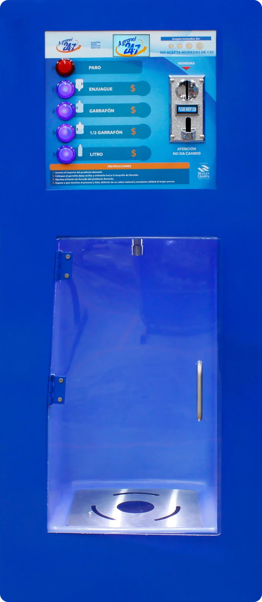
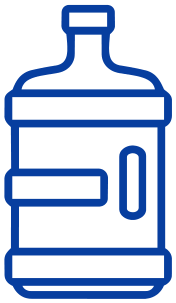
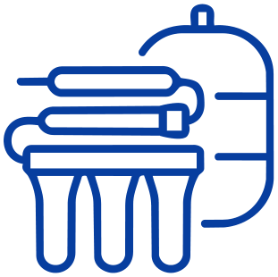
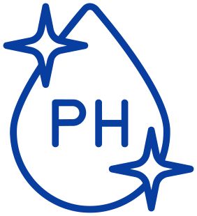
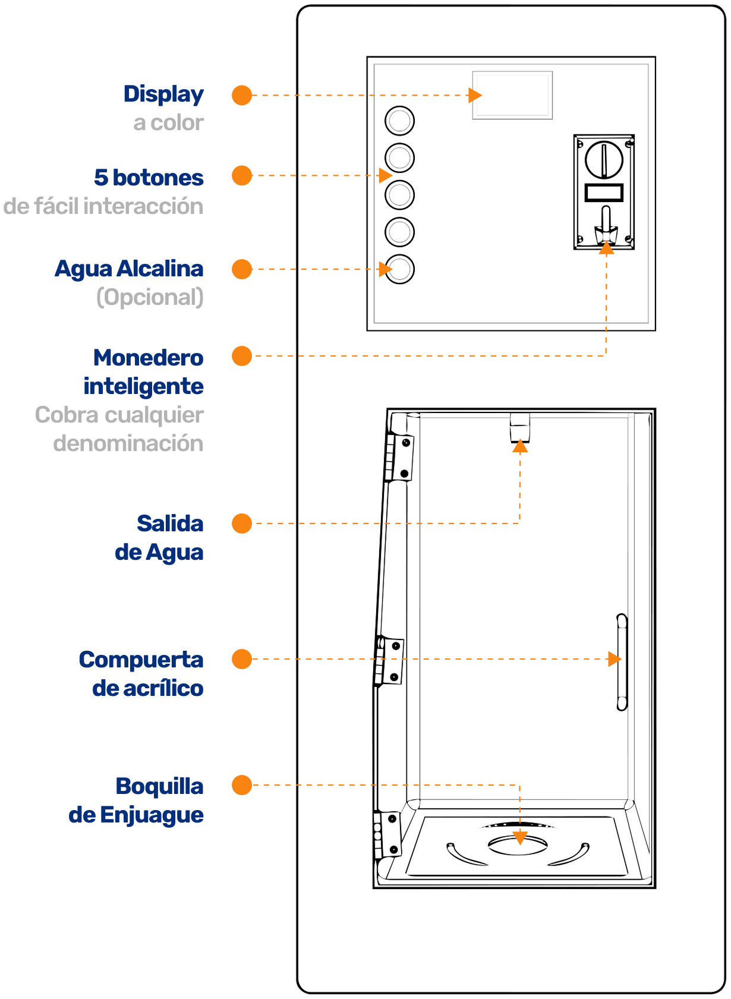
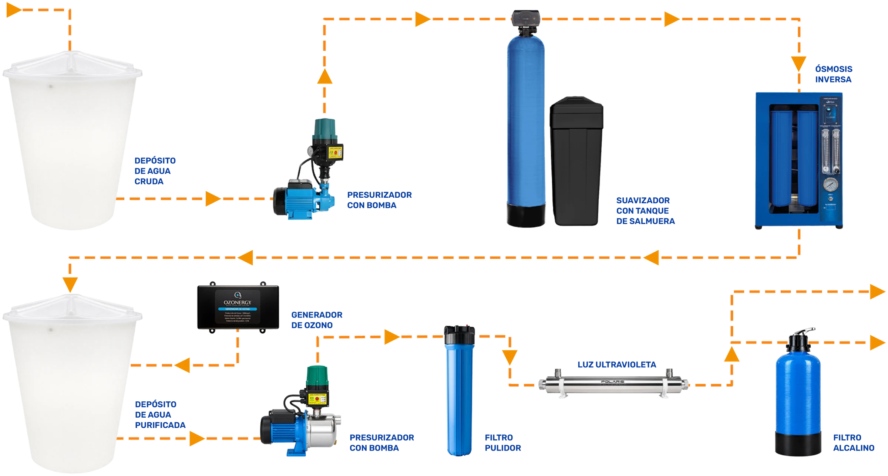
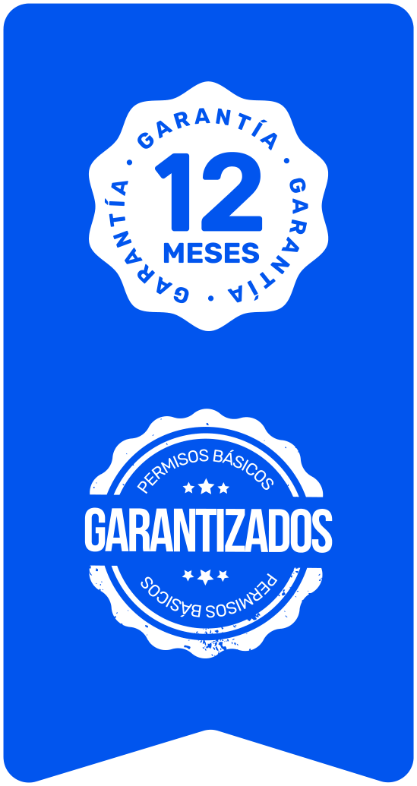

KIOSKO
DE AGUA
El Kiosko de Agua es una solución vending automatizada para la venta de agua purificada en garrafones, diseñada para ofrecer un servicio práctico y accesible durante las 24 horas del día. Integra un sistema profesional de purificación por ósmosis inversa para producir agua destinada a la comercialización.
Su diseño compacto permite instalarlo en espacios comerciales reducidos, sin necesidad de atender personalmente cada venta. Además, su operación automatizada permite mantener el servicio disponible incluso fuera del horario comercial habitual.

Características del equipo
FUNCIONES QUE HACEN ÚNICOS A NUESTROS EQUIPOS AUTOMATIZADOS 24-7

PRODUCE HASTA
130 GARRAFONES
POR DÍA

SISTEMA DE
PURIFICACIÓN POR
ÓSMOSIS INVERSA
TABLERO DE FÁCIL
INTERACCIÓN
PARA EL USUARIO

INTEGRA AL SISTEMA
AGUA ALCALINA
AL SISTEMA
Equipos desarrollados por ingeniería 100% mexicana
Principales
componentes
El Kiosko de Agua integra un sistema de purificación por etapas que combina prefiltración, acondicionamiento del agua, ósmosis inversa y procesos de pulido y desinfección. Sus componentes trabajan de manera conjunta para acondicionar el agua antes de su suministro al punto de venta.
Su diseño concentra los elementos necesarios para seleccionar y operar el servicio de manera sencilla.

Componentes del sistema
de purificación

Inversión segura
y confiable
Precio de lista
$109,000MXN
Precio de meses1:
$133,995MXN

Aumenta tus ventasAñade agua alcalina
Por sólo$10,000adicionales
1PRECIO DIFERIDO HASTA EN 12 MESES PAGANDO CON TARJETAS DE CREDITO PARTICIPANTES. PRECIOS INCLUYEN IVA.